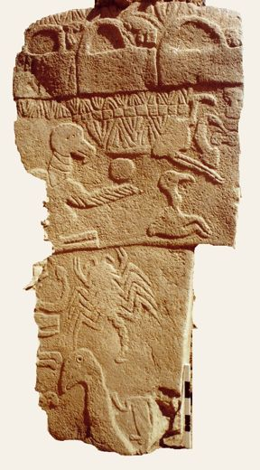
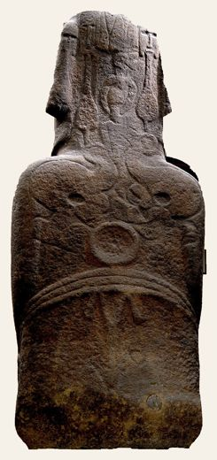
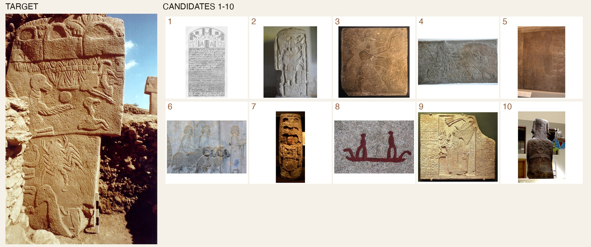
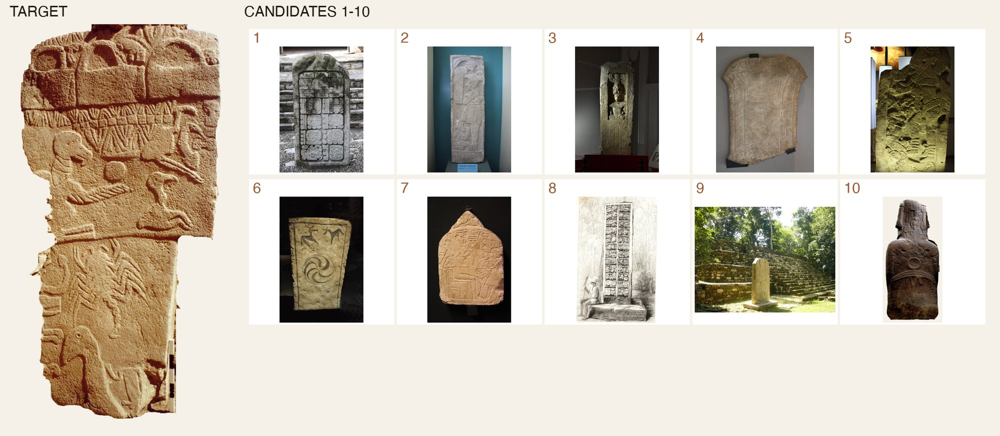

The verdict, for the pilots
Three pilots, in the order they were run, all logged with their changes in the pre-registration. Pilot A, blind feature coding, returned no verdict because the two coders could not agree on the features that matter; its results are kept below as a record of what did not work. Pilot B asks vision models to score two panels side by side, blind, on a fixed rubric, and compares the pair with 1,500 random foreign pairs, same-tradition pairs and a documented-descent control. Pilot C is the lineup: one target, ten candidates, rank them all, and see whether the planted one stands out. Its first round used random decoys and produced a false positive that the judges' own reasons exposed (both targets are carved standing stones, most decoys are not), so a second round matched every decoy on object type and removed the backgrounds from both photographs. The judges were told, at length, that they were comparing what is depicted and not the medium, the preservation or the photograph, and were given the standard of evidence: does the correspondence look like a shared tradition, or like something any two traditions could produce alone? They were not told the purpose of the study, any hypothesis or any culture.
Pilot C: blind lineups
The cleanest question to ask a judge is not "how similar are these two" but "pick it out of a lineup". A judge sees one target panel and ten numbered candidates, and ranks all ten by similarity of depicted content to the target, under the same instruction as pilot B: compare what is shown, ignore medium, preservation and photography. One candidate is planted; the other nine are random decoys from other traditions. If the planted candidate is nothing special it ranks first one time in ten and averages 5.5; if it stands out, it ranks first most of the time. The same design tests the controls: does a random Assyrian panel get picked out when the target is from Persepolis, and does a panel get picked out among strangers when the target is from its own tradition?
What the judges were actually matching
The first lineups were run with random decoys, and the moai and the pillar were picked out well above chance. Reading the judges' reasons showed why, and it was not what is carved. Opus's typical reason: "like the target, a free-standing anthropomorphic monolith whose body itself is the figure, with shallow low-relief motifs laid over its faces, rather than a scene set on a flat panel." Gemini: "shares the anthropomorphic pillar form with relief-carved arms." Pillar 43 has no arms, and the reason is about the kind of object: a carved standing stone against a lineup of wall reliefs, rock outcrops and drawings. Two things follow. First, every panel in the corpus was classified blind by object type (free-standing monolith, statue, wall or architectural relief, rock surface, portable object, drawing), and a second round of lineups draws all nine decoys from free-standing monoliths and statues: Maya stelae, Egyptian stelae, Gotland picture stones. Second, both target photographs carry backgrounds the judges could see, a museum display piece behind the statue and sky, wall and a neighbouring pillar behind the stone, so both were also used in an isolated form with the background removed and the carved surfaces untouched.


One lineup, as the judges saw it


Which decoys beat the moai
Pilot B: the pair judged directly, against everything else
Each judgment shows a model two panels side by side, labelled A and B in random order, with no captions, names or places, and asks for a similarity score from 0 to 10 on a fixed rubric (shared elements and how specific they are, relationships between elements, arrangement, style of depiction, gestalt) with a two-sentence justification. The judge is told, at length, what it is comparing: what is depicted, the kinds of things shown, the forms they take, how they relate to each other, how they are arranged, and the style in which they are drawn; and what it must ignore: the medium, the material, erosion, and the photographs themselves (lighting, angle, crop, resolution, background). A crisp museum photograph of carved stone and a blurred field snapshot of painted clay are highly similar if they show the same scene; two stone slabs photographed the same way are not similar if they show different things. It is also given the standard of evidence: does the correspondence look like something two surfaces would share only if they shared an iconographic tradition, or like something any two unrelated traditions could produce independently? Arbitrary, specific, conventional correspondences score high; universal or obvious ones score low. The judge is not told the purpose of the study, any hypothesis, or any culture. Three judges: Claude Opus 5, Claude Sonnet 5, GPT-5.5. Opus is the primary judge for the null and the searches; GPT-5.5 repeats the searches and part of the null independently. Pillar 43 is judged from the excavators' photographs of the whole pillar, headless man included, and separately from the top-only Commons photograph used in pilot A, so the effect of that mistake is measured rather than assumed.
What the judges said about the pair
The best matches the judges could find
Pillar 43 and the moai's back were each compared with every other panel in the corpus. These are the highest-scoring foreign panels each judge found, with its own justification. If the pair were exceptional, the moai would sit at the top of Pillar 43's list and Pillar 43 at the top of the moai's.
Reliability
Pilot A: feature coding, and why it failed
The first design coded every panel into 36 composition features (which classes of thing are present, in which third of the panel, how many registers, symmetry, and so on) and measured distance between feature vectors. Two blind coders agreed on only of the 36 features to the pre-registered standard, and least of all on birds (), snakes () and bird posture (). With a relaxed threshold the nearest neighbours it produced were not similar by any human standard: Pillar 43's was a , the moai's a . The feature scheme threw away the gestalt, and matching on presence and absence rewarded shared generic values. The sections below keep that record; pilot B replaced the method.
The pair, as coded
Each panel's card shows the two coders' one-sentence descriptions, written without any knowledge of what the object is. Below the cards, the nearest foreign neighbour each panel actually has in the corpus.
The corpus
Every file in the pre-registered Wikimedia Commons categories was fetched, then triaged blind by Sonnet 5 for whether it shows a single decorated surface that can be coded (site views, museum rooms, undecorated statues and unreadable fragments are dropped). Several photographs of the same object can survive triage; the pilot accepts that and the neighbour analysis is cross-group only.
Coding, and how much the coders agreed
Opus 5 and Sonnet 5 coded every usable image independently, from the image and the feature definitions alone. Agreement per feature is Krippendorff's alpha; features under 0.67 were dropped before any distance was computed, as pre-registered. The retained features are what the whole analysis runs on.
The null: how close does any panel get to a foreign one? (exploratory)
The pre-registered version could not be computed. In the exploratory variant shown here, features with alpha ≥ 0.5 are kept, each coder's mismatch is averaged rather than requiring consensus, and shared absences are ignored so that sparsely coded panels do not become everyone's neighbour. For every coded panel, its distance to every panel in a different group was computed and the smallest kept. That distribution is the yardstick. The moai was chosen as Pillar 43's match from all of world art, so the fair question is not "how similar are these two" but "how similar is any panel to its best foreign match".
Groups, positive controls, and geography (exploratory)
Mean composition distance between every pair of groups. The positive controls are the two pairs with documented descent or continuity, Assyria to Persepolis and Anatolian PPN to Çatalhöyük: they must be among each other's two closest groups for the method to be trusted.
What drives the target pair's score (exploratory)
Feature by feature: the consensus code of Pillar 43, of the moai's back, whether they match, and how common that value is across the whole corpus. A match on a value that most panels share carries little information; a match on a rare value would.
Nearest foreign neighbours, sampled (exploratory)
What "close" looks like in this corpus. Each card is a panel and the foreign panel it is nearest to, with the distance. Shuffle to see others.
What these pilots do and do not show
It is a pilot on Commons photographs. Coverage is uneven, several images show the same object from different angles, and the Orongo petroglyph corpus is far larger than what is photographed online. Only Maya, Egypt and Gotland contribute enough free-standing monoliths to serve as matched decoys. The full study needs the published corpora and orthophotos.
The judges are vision models. They are blind to provenance, which humans rarely are, and five families from four companies agree on the controls: a same-tradition panel is picked out of a lineup about half the time, a related-tradition panel three quarters of the time. But they are also easily led by what a photograph is of rather than what is carved on it. The first round of lineups showed that: the two carved standing stones found each other in a crowd of wall reliefs, and the judges said so in their reasons. Any similarity study that uses these models has to match its decoys on object type and strip its backgrounds, or it will measure the wrong thing.
Not every judge saw every set. Opus, GPT-5.5 and Sonnet completed every lineup set. Gemini's key hit its quota and the Grok account ran out of credit part-way through the second round, so their counts in the table are smaller; nothing they did see points the other way. In pilot B, the OpenAI account ran out of credit before GPT-5.5's 500-pair null and its 200 reliability re-judgments, so GPT-5.5's agreement with Opus is measured on the 447 Pillar 43 search pairs and no GPT-5.5 null percentile is reported. Opus judged the full null, the controls and both searches.
Removing the backgrounds is an intervention. It is documented, the carved surfaces are untouched, and the isolated targets are shown above so anyone can check them. The alternative, leaving a museum display piece in one photograph and a second pillar in the other, is a bigger intervention in the other direction.
Composition is not meaning. Two panels can share "a bird at the top and a creature at the bottom" because that is how the sky and the ground are, everywhere. The judges were told to weigh arbitrary, specific correspondences over universal ones. Whether they did is checkable in their reasons, quoted throughout.
Pilot A's own limits stand. Its coders disagreed on the features the claim turns on, above all "is there a bird", and it was run on a top-only photograph of Pillar 43 without the headless man; pilots B and C used the whole pillar and measured the difference.
What would change the verdict. For the lineups: the moai ranked first for Pillar 43 in more than half of the object-type-matched lineups by at least two judges, and at least as often as the same-tradition control. For the direct scores: the pair above the 95th percentile of the foreign-pair null for two judges, with fewer than ten foreign panels rated above it in the searches. Neither happened.